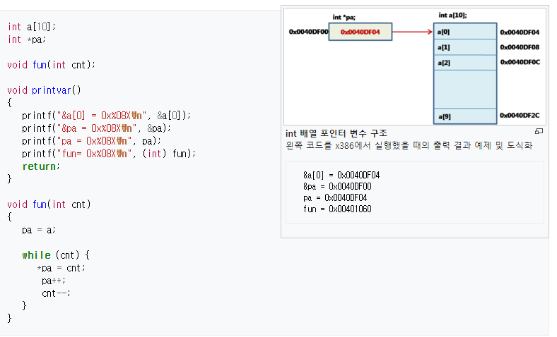
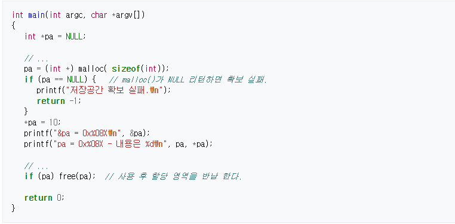

포인터
포인터(pointer)는 프로그래밍 언어에서 다른 변수, 혹은 그 변수의 메모리 공간주소를 가리키는 변수를 말한다. 포인터가 가리키는 값을 가져오는 것을 역참조라고 한다. 포인터는 어셈블리, C, C++, 파스칼 등 하위 레벨까지 제어할 수 있는 언어에서 주로 많이 쓰이며, 모듈라-2, 에이다와 같은 언어에서는 극히 제한적으로 사용되고, 자바, 에펠 등에서는 완전히 숨겨져 사용할 수 없다. 첫 번째 부류의 언어에서는 포인터를 메모리의 임의의 주소를 가리키도록 할 수 있으며 포인터의 연산도 가능하다. 일반적으로 포인터는 메모리 주소로 바꿀 수 있다. 포인터는 다른 변수나 함수를 가리키도록 사용된다.
모든 변수는 메모리에 값을 저장한다. const와 같은 고정값 변수 외의 모든 변수는 메모리 중에 RAM에 할당된다.
이러한 메모리의 공간을 구별하는 것이 메모리 주소값이다. 주소로 각각의 위치를 구별 한다. 포인터 변수 모두는 메모리의 주소를 지정하는 값을 가진다.
데이터가 존재하는 주소값을 사용하여 액세스 한다. 즉, 어떤 번지의 메모리에 값을 쓰거나 또는 읽어 오는 방식이다.
정적변수 역시 메모리에 배치되고 결국은 주소값을 가질 것이다. 그러나 차이점은 기계어 코드에 주소값을 고정하여 액세스 된다.
그러나 포인터 변수는 주소값을 가지고 액세스 하기 때문에 임의의 위치를 바꿀수도 있게 된다.
전역변수의 정적변수는 기계어 코드에 주소값을 고정하는 방식이 일반적이다. 지역변수는 스택 또는 CPU의 레지스터를 써서 위치값을 설정 한다.
포인터 변수는 메모리에 주소값을 저장하는 방식이기 때문에 이 주소값을 읽어 실제 데이터를 액세스 한다.
메모리 액세스 모드 중에 직접주소방식으로 데이터를 액세스 한다.
메모리의 주소는 CPU을 설계한 설계 기준에 따라 주소값의 길이와 방식이 결정된다.
일반적인 용도의 대부분의 CPU는 메모리를 지정하는 길이(비트수)는 동일하다. RAM이든 ROM/FLASH 이든 모든 주소는 같다.
MCU(8051,...)은 오히려 많은 경우 메모리 영역을 나누어 다른 주소체계를 사용한다. 8051은 내부의 256바이트 내에 변수를 할당 한다.
256바이트는 적기 때문에 많은 데이터를 처리하기 위해 변수는 잡을 수 없다.
많은 양의 데이터를 저장하기 위해 16비트의 저장 공간을 갖는 주소체계를 같이 사용한다.
그리고 양쪽의 액세스는 기계어 코드를 분리 해서 액세스 한다. 이럴 경우는 주소값이 8비트 또는 16비트가 필요하다.
C언어 컴파일러에서 이를 지정할 수 있는 방법을 제시한다.
포인터 변수의 유연성은 프로그램 작성의 유연성과 연관된다.
C언어가 UNIX 계열의 OS 작성 할 때 사용하였으므로 커널의 프로그램 소스를 보면 상당히 많은 부분 포인터 변수를 볼 수 있다.
유연성은 경우에 따라서 단점으로도 작용할 수 있다. 포인터값에 따라 정의 되지 않는 메모리 영역을 액세스 할 수 있기 때문이다.
물론 정적변수도 스스로의 배열등의 공간 밖을 액세스 할 수 있지만, 포인터를 사용하면 이것이 좀더 복잡해 진다.
1.1 32비트 CPU에서의 포인터의 예

변수 int *pa;는 특정 데이터 영역의 위치 정보를 가지고 데이터를 액세스 하는 것이다. 따라서 실제로 정수형 데이터가 들어가는 것이 아니고, 정수형 데이터가 들어갈 주소값이 저장 된다.
1.2 할당 및 해제
C언어에서 변수는 정적변수와 동적변수가 있다. 처리할 데이터의 숫자를 예측할 수 있다면 정적으로 선언하면 된다. 배열변수들이 예이다. 그러나 데이터 처리를 미리 예측할 수 없다면 최대의 데이터 처리량을 정하고 정적으로 선언할 수 밖에 없다. 이 문제를 해결하기 위해 동적 변수를 사용한다.
C에서는 전통적으로 동적할당 변수를 잡을 경우 malloc() 함수를 사용하여 데이터 저장공간을 확보한다. 이와 관련된 함수는 다음과 같다.
그리고 사용이 완료 되면 free() 함수로 해제 한다. 해제 된 메모리 영역은 다시 재 활용이 된다. 프로세서의 메모리 맵에서 힙영역(heap)영역을 활용하여 동적 저장 공간을 확보 한다. 각 프로세스 마다 힙영역은 크기가 정해져 있기 때문에 무한정 malloc() 함수를 사용하여 동적으로 잡을 수 없다. 따라서 개발자는 free() 함수로 해제 해 주어야 한다. 만약 동적할당을 하지 못하면 주소값이 NULL이 리턴 된다.

C++에서는 new와 delete가 추가 되었다. 이것은 내부에서 malloc() 함수 기능을 하는 기능을 수행한다. 따라서 표현법이 확장되었고, 힙영역을 활용하는 것은 같다.
1.3 포인터 연산
포인터의 실제 형식은 시스템 종속 정수형이다. 즉, 32비트 플랫폼에서 포인터는 4바이트 정수이며, 64비트 플랫폼에서 포인터는 8바이트 정수형이다. 정수이기 때문에 간단한 덧셈 연산이 유효하다.
프로세서의 힙공간은 제한 적이다. MFC와 같은 윈도 프로그램의 경우, 필요에 따라 운영 체제의 자원을 할당 받아 동적공간을 확보 할 수 있다. 이와관련 된 함수 들이 존재 한다.
이것 역시 동적할당 이기 때문에 포인터 변수를 사용하여 처리 한다. 프로세서에서 할당 받은 공간은 실행이 끝날 때 까지 동적으로 유지 되지만, 이와 관련 된 할당은 운영 체제와 관련 되어 있으므로 메모리 공간을 잠금을 할 경우도 있다.
이 작업이 제대로 이루어지지 않을 경우 운영체제는 리소스 부족, 알 수 없는 오류, 잘못된 연산 수행과 같은 오류를 일으킨다.